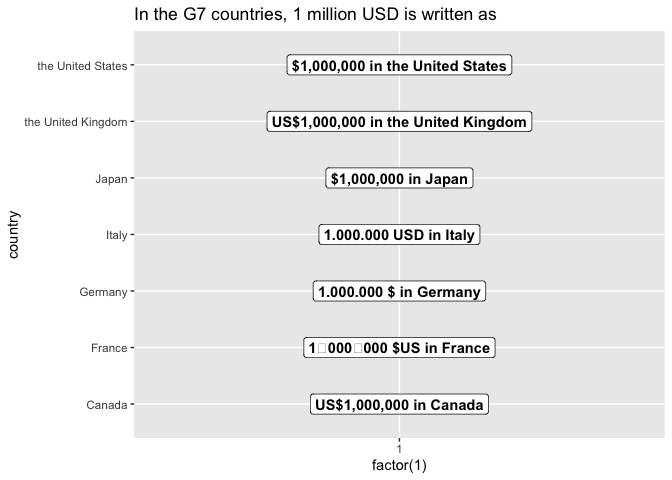
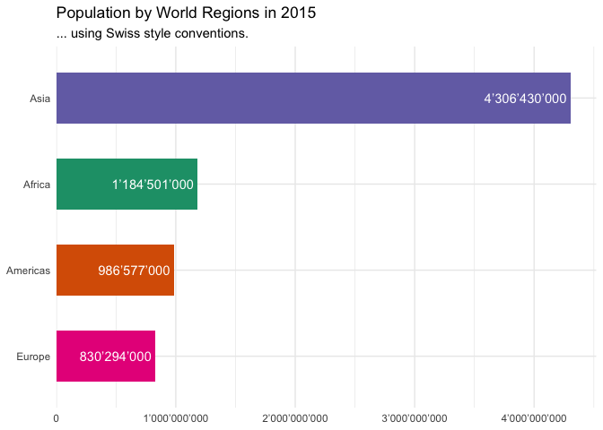

countryscales extends the scales package to make it easy to display numbers according to country-specific style conventions. Additionally countryscales extends ggplot2 by providing a set of positional scale functions to make it easy to style axes displaying numbers, percentages or currencies.
Installation
You can install the development version of countryscales from GitHub using:
remotes::install_github("trekonom/countryscales")Usage
The most common use case for countryscales is to customise the appearance of axis and legend labels or format numbers added as labels to a plot using country-specific style conventions.
As a first example consider formatting a chart according to style conventions used in Germany and several other European countries where a dot (.) is used as the big mark or grouping mark or thousands seperator and a comma (,) as the decimal mark.
Using countryscales this could be achieved using the scale_x/y_xxx_locale and label_xxx_locale family of functions like so:
library(countryscales)
library(ggplot2)
library(dplyr, warn.conflicts = FALSE)
base <- gapminder15 |>
count(region, wt = pop) |>
ggplot(aes(n, reorder(region, n), fill = region)) +
scale_fill_brewer(palette = "Dark2") +
geom_col(width = .6) +
theme_minimal() +
labs(x = NULL, y = NULL, title = "Population by World Regions in 2015") +
guides(fill = "none")
base +
geom_label(aes(label = label_number_locale(locale = "de-DE", accuracy = 1000)(n)),
hjust = 1, fill = NA, label.size = NA, color = "white"
) +
scale_x_number_locale(locale = "de-DE", expand = expansion(mult = c(0, .05))) +
labs(subtitle = "... using German style conventions.")
Besides the _locale family of functions countryscales provides convenience functions for most common locales, e.g. to format the plot using Swiss style conventions you could achieve the same result using label_number_ch and scale_x_number_ch like so:
base +
geom_label(aes(label = label_number_ch(accuracy = 1000)(n)),
hjust = 1, fill = NA, label.size = NA, color = "white"
) +
scale_x_number_ch(expand = expansion(mult = c(0, .05))) +
labs(subtitle = "... using Swiss style conventions.")